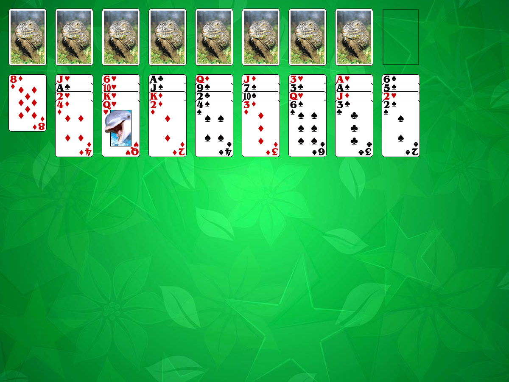

This solitaire uses 104 cards (2 decks). The seven cards with their faces down (closed) are the King's row. Eight foundation piles are placed on top of the closed card. The last eighth foundation pile doesn't have an imprisoned card under it.You also have 8 tableau piles with 4 cards in each pile.
Kings are moved to the foundations as they become available.
The object of the game is to build the foundations up in suit to Queens.
The rules: If a King is the top card of any of the tableau piles it is moved to the foundation and placed on top of the closed card in the King's Row. So this closed card becomes imprisoned. It will be free only after you built up the whole suit over it in order of rank (K,A,2,3..,Q). Foundation piles are filled up from left to right as soon as new Kings appear. The last eighth king doesn't have an imprisoned card under it.
You may build tableau piles down in suit. You can move either a single card or a set of cards. The top card of each tableau pile can be moved to the King's row if it is possible.
When you have made all the moves initially available, click the stock pile to begin turning cards over. The card that is face up on top of the deck is always available for play. You can move the top card from the stock pile to the foundations (up in suit) or to one of tableau piles (down in suit).
Empty tableaus may be filled with any single card or group of cards in proper sequence.
As soon as you build up the suit so that the Queen is on top, the imprisoned card becomes
free. You can move this card only onto the King's row (you cannot move it onto any tableau pile).
When you have made all the available moves on the board and you still have cards in the stock
you can turn it over two more times. You win when all cards are on the foundations.
